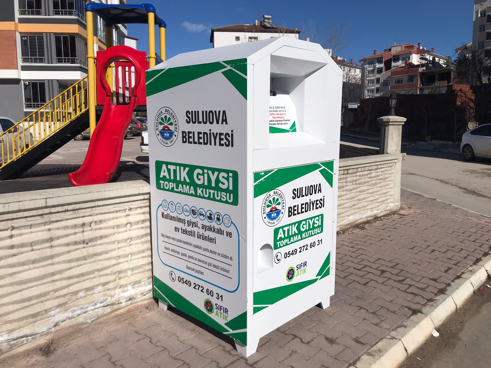

Gardırop Döngüsü

Dersten çıkmıştım ve yurduma doğru geliyordum. küçük bir çoçugun yurdumun yanındaki atık kıyafet kutusunun içine baktığına tanık oldum.
Yanına giderek konuşmaya çalıştım.konuşma esnasında işe ihtiyacının olduğunu ve ekonomik eşitsizlerden ötürü alamayacığını söylediğinde
bende neden yapay zeka destekli ve mobil uygulaması olan bir gardırop döngüsü yapmalıyım diye düşündüm.
Gardırop Döngüsü Nedir ?
Giyim eşyalarının geri dönüşümünü kolaylaştırmak için kullanıcı dostu bir sistemdir.
İnsanlar, belirli noktalara yerleştirilmiş cihazlara giysilerini bırakabilir ve bu giysiler,
ihtiyacı olan insanlara ulaştırılmak üzere ayırtılabilir. Projemiz, yapay zeka tarafından desteklenen cihazlar kullanarak işlemekte.
Bu cihazlar, giysileri tanımlamak ve ihtiyacı olanlara yönlendirmek için kartlar üzerindeki verileri kullanır.
Kullanıcılar, mobil uygulama aracılığıyla cihazlara giysilerini bırakabilir ve ihtiyacı olan giysileri rezerve edebilir.
Bu sayede, bağışçılar ve alıcılar arasında kolay bir etkileşim sağlanır.Çözümüm Gardırop Döngüsü kıyafetlerinizi atmaktan daha fazlasını yapmamızı
sağlayan bir platformdur.Kullanıcılar ,giyim endüstrisinin olumsuz etkilerini azaltabilir ve ihtiyaç sahiplerine paylaşabilirler.
Gardırop Döngüsü, giyim endüstrisinde sürdürülebilir bir dönüşüm sağlamak,
insanlar arasında dayanışmayı artırmak ve ekonomik eşitsizliği azaltmak için tasarlanmış bir projedir.
Desteklerinizle, bu projeyi gerçeğe dönüştürmek için çalışmayı dört gözle bekliyorum.